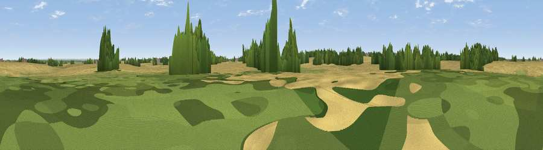

Viewpoint near Heighington
#40761 in England · top 73% of its area beats it · near HeighingtonWhere it is
The exact computed spot (TF 04159 68004). Click the marker for map links.
The view, rendered

A 360° render of this exact spot computed from the terrain model, tree cover and land cover — summer colours, afternoon light, calibrated against photographs of famous viewpoints. Real trees, hedges and buildings will differ in detail.
The panorama
Grey silhouette: terrain skyline in each direction (720 bearings, Earth curvature and refraction included). Dashed green: skyline with trees (+15 m) and buildings (+8 m) as obstacles. Blue strip: how far the ground is visible on each bearing.
Where the view opens
Wedge length = distance to the farthest visible ground on that bearing (vegetation-aware). Rings at 10, 25 and 50 km.
What fills the view
73% cropland · 16% grassland · 11% woodland
Angular shares of the visible panorama (visual magnitude), not map area. Landscape diversity 0.34 (0–1 Shannon).
Key numbers
More beautiful places nearby
The staircase of upgrades: each row has a higher view potential than everything closer. Driving times are estimates from straight-line distance, calibrated against real road routing — check an actual route before setting out.
| Place | Direction | Drive | Score |
|---|---|---|---|
| Viewpoint near Heighington | N · 2 km | ~5 min | 37.4 |
| Viewpoint near Potterhanworth | ESE · 3 km | ~7 min | 40.5 |
| Viewpoint near Bracebridge | W · 7 km | ~14 min | 51.8 |
| Lincoln Castle | WNW · 8 km | ~16 min | 54.5 |
| Viewpoint near Burton-by-Lincoln | NW · 11 km | ~21 min | 54.9 |
| Viewpoint near North Willingham | NNE · 24 km | ~40 min | 55.1 |
| Viewpoint near Goulceby | ENE · 25 km | ~41 min | 56.9 |
| Viewpoint near Walesby | NNE · 26 km | ~42 min | 57.9 |
53.19892, -0.44222 · source: osm peak · position refined by local search. Computed location — check access rights before visiting.